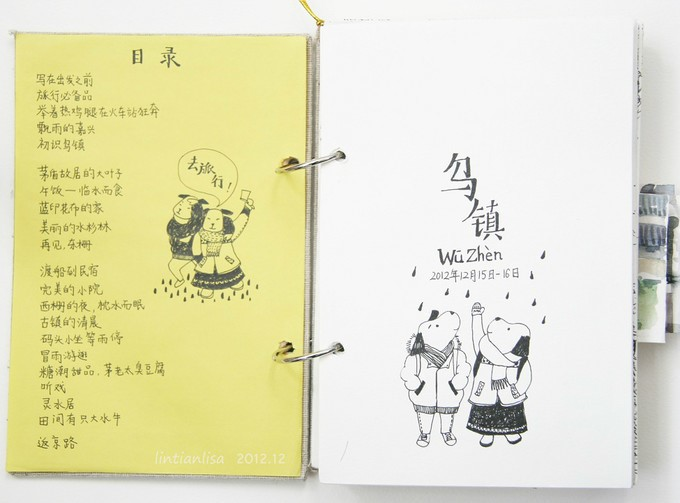
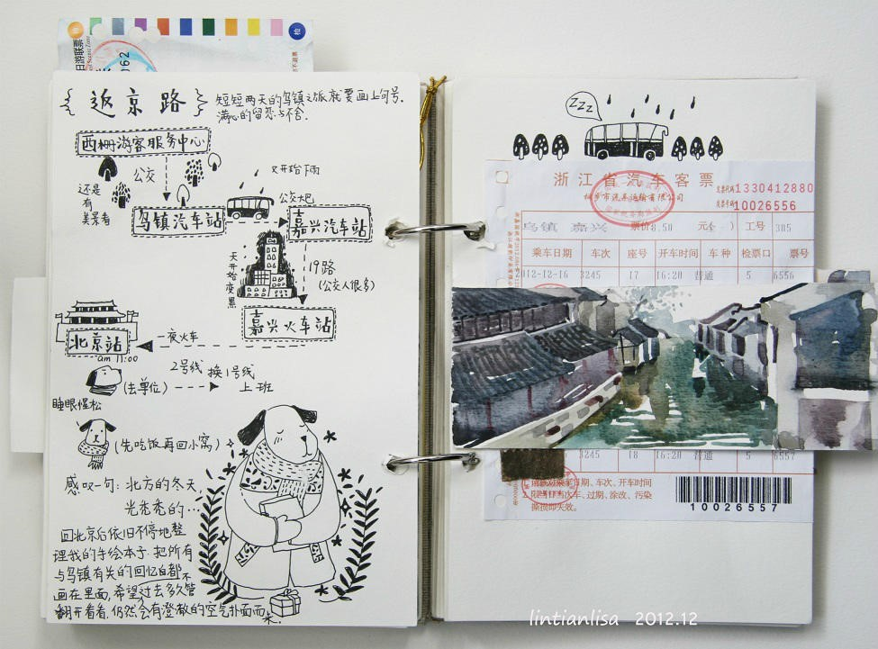

第七届计算机辅助翻译与技术传播大赛
提交试题说明：
请您注册登录课堂派(www.ketangpai.com)网站，点击“加入班级”，输入邀请码：H54VM5，加入比赛专用班级，并通过“提交作业”的方式提交参赛作品。
网站注册时要求填写学校和学号。学号可以填写自己学校的学号或任意数字。学校请如实填写，如果您是已毕业学生，请填工作单位或其它。
技术写作类试题的参赛作品可以通过附件形式上传其他格式的文件。
请以姓名_所属单位(_可选说明)命名文件，如张三_北京大学_技术传播.docx。注意英译汉、汉译英和技术传播都需要完成。
试题和答题纸文件下载：点击下载
初赛试题
第一部分 英汉互译
英译汉
Seeing a Black Hole Through Stephen Hawking's Eyes
（Excerpt）
Marina Koren
Black holes, one of the most mystifying phenomena in the universe, are the epitome of camera-shy. The gravity of these extremely dense points in space is so strong that nothing, not even light, can escape. But with the right setup and powerful technology, humanity could catch a glimpse of one.
Hawking, the English theoretical physicist, died Wednesday at his home in Cambridge, England, at the age of 76. He gave the world many important contributions to the study of the universe, but he is perhaps best known in the field for his work on the properties of black holes. His tremendous intellect, boundless curiosity, and best-selling books inspired a generation of astronomers and physicists who have devoted their careers to studying these invisible objects.
In the 1970s, Hawking upended theories for explaining black holes—but he didn’t actually mean to. “For a long time, people thought that black holes were these infinite sinks, like a roach motel—when things went in, they didn’t come back out again,” Doeleman said.
Hawking believed much the same. So when the Israeli theoretical physicist Jacob Bekenstein, at the time a Princeton graduate student, suggested black holes have entropy—the disorder of a system, measured using thermodynamics—and therefore have temperatures, Hawking set about to prove Bekenstein wrong. He paired insights from small-scale physics (quantum mechanics) with those of large-scale physics (Einstein’s theory of gravity).
After many hours of running through calculations, he concluded that Bekenstein was correct. Hawking determined that black holes actually spew out radiation particles, and even eventually shrink. These particles were named Hawking radiation.
Hawking made his biggest contributions to the study of black holes a decade into living with amyotrophic lateral sclerosis, or ALS, a motor-neuron disease that eventually paralyzed and confined him to a wheelchair. “He persisted in his life and his work—wrote papers, gave talks—amusing talks, came to conferences, in the face of overwhelming difficulties. Hawking kept the debate about black holes lively, wagering bets with his contemporaries over who was right about one characteristic of black holes or another. Hawking was a giant in the field, but he was also a team player.
In the statement announcing Hawking’s death, the physicist’s children wrote that he once said, “it would not be much of a universe if it wasn’t home to the people you love.” The universe is a lonelier place without Hawking, but he leaves behind a legion of scientists ready to unlock some more of black holes’ closely guarded secrets. The theory Hawking presented in 1974, for instance—that black holes emit radiation—still remains under some debate. （434 words）
材料来源：
https://www.theatlantic.com/science/archive/2018/03/stephen-hawking-death-black-hole/555653/
汉译英
我很重要
（节选）
毕淑敏
当我说出“我很重要”这句话的时候，颈项后面掠过一阵战栗。我知道这是把自己的额头裸露在弓箭之下了，心灵极容易被别人的批判洞伤。
许多年来，没有人敢在光天化日之下表示自己“很重要”。我们从小受到的教育都是——“我不重要”。
作为一名普通士兵，与辉煌的胜利相比，我不重要。
作为一位奉献型的女性，与整个家庭相比，我不重要。
作为随处可见的人的一分子，与宝贵的物质相比，我们不重要。
我们——简明扼要地说，就是每一个单独的“我”——到底重要还是不重要?
我们是由无数星辰日月草木山川的精华汇聚而成的。我们是一株亿万年苍老树干上最新萌发的绿叶，不单属于自身，更属于土地。人类的精神之火，是连绵不断的链条，作为精致的一环，我们否认了自身的重要，就是推卸了一种神圣的承诺。（317字）
第二部分：技术传播
阅读材料，并根据要求写作。
材料一
四月初一日，早雨。行十五里，路有岐，马首西向台山，天色渐霁。又十里，抵松门岭，山峻路滑，舍骑步行。自奉化来，虽越岭数重，皆循山麓；至此迂回临陟，俱在山脊。而雨后新霁，泉声山色，往复创变，翠丛中山鹃映发，令人攀历忘苦。又十五里，饭于筋竹庵。山顶随处种麦。从筋竹岭南行，则向国清大路。适有国清僧云峰同饭，言此抵石梁，山险路长，行李不便，不若以轻装往，而重担向国清相待。余然之，令担夫随云峰往国清，余与莲舟上人就石梁道。行五里，过筋竹岭。岭旁多短松，老干屈曲，根叶苍秀，俱吾阊门盆中物也。又三十余里，抵弥陀庵。上下高岭，深山荒寂，恐藏虎，故草木俱焚去。泉轰风动，路绝旅人。庵在万山坳低洼处中，路荒且长，适当其半，可饭可宿。
——徐弘祖《徐霞客游记》
材料二
某自由行服务平台手绘旅行小组上，某网友分享的手绘乌镇旅行攻略节选如下：


材料来源：马蜂窝旅游网网友“林田Lisa”作品《两只小狗的乌镇手绘之旅》
从上述材料可发现，从数百年前精炼隽永的文言游记，到如今图文并茂的手绘攻略，旅行攻略的呈现形式可能千姿百态，但都体现创作者对旅途中吃、穿、住、行、玩等信息的总结整理。创作旅行攻略，需要创作者在仔细考虑读者身份后，对旅行路线、景点相关情况等信息进行梳理，形成合理清晰的信息架构，还需要创作者以恰当的语言风格进行写作。
试题任务场景：
Tom是一名来自美国纽约的男生，今年22岁，喜爱户外活动，对中国历史兴趣浓厚，不会中文。下周，他即将作为交换生第一次抵达中国并开始学习生活，由你负责帮忙接待。他希望从北京大学东门出发，独自去八达岭长城游玩，一天内返回。你需要为其制作一份英文版旅行攻略，内容包括但不限于公共交通路线、订购景点门票、必备物品清单等。
试题要求：
① 结合对材料的思考，根据上述试题任务场景，创作一份英文旅行攻略。字数限制：100至800字范围内。
② 若提交多份，则仅对第一份进行评分。
注意事项：
① 注意排版清晰美观，不拘泥于自己所搜集到的公开信息的原有形式，在自己的英文旅行攻略作品中最大程度实现信息易获取的目标。
② 选手作品若为文档形式，为保证排版布局等不出现问题，建议转为PDF格式文件提交。
③ 本次大赛鼓励使用多种信息呈现手段，如文档、网页（为考察选手的技术写作能力，不推荐使用音频、视频格式）等。可通过附件形式提交。